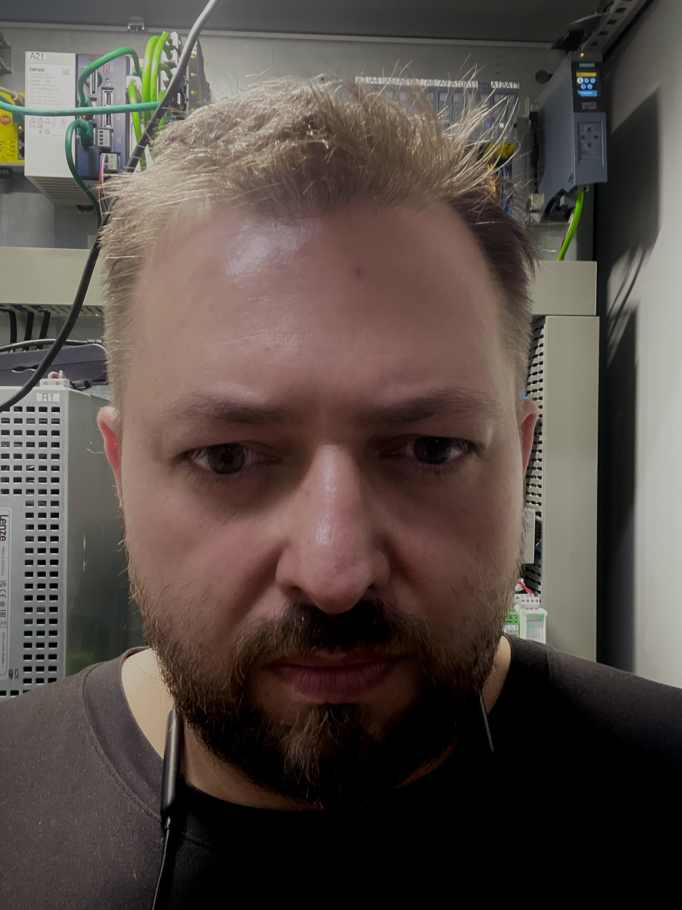

Inżynier automatyki z ponad 20-letnim doświadczeniem w przemyśle europejskim

Ponad 20 lat doświadczenia w automatyce przemysłowej, utrzymaniu ruchu oraz projektowaniu systemów sterowania.
Specjalizuję się w programowaniu sterowników PLC Siemens S7 / TIA Portal, systemach Lenze, projektowaniu instalacji elektrycznych w EPLAN oraz uruchamianiu maszyn i kompletnych linii produkcyjnych. Realizowałem projekty dla klientów w wielu krajach Europy — modernizacje, optymalizacja procesów, zwiększanie niezawodności produkcji.
Posiadam doświadczenie w integracji napędów przemysłowych, uruchamianiu maszyn oraz rozwiązywaniu złożonych problemów technicznych w środowisku produkcyjnym. Moim celem jest dostarczanie praktycznych i niezawodnych rozwiązań zwiększających wydajność, bezpieczeństwo i dostępność maszyn.